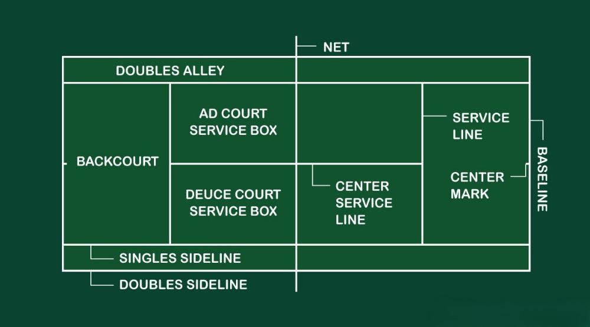
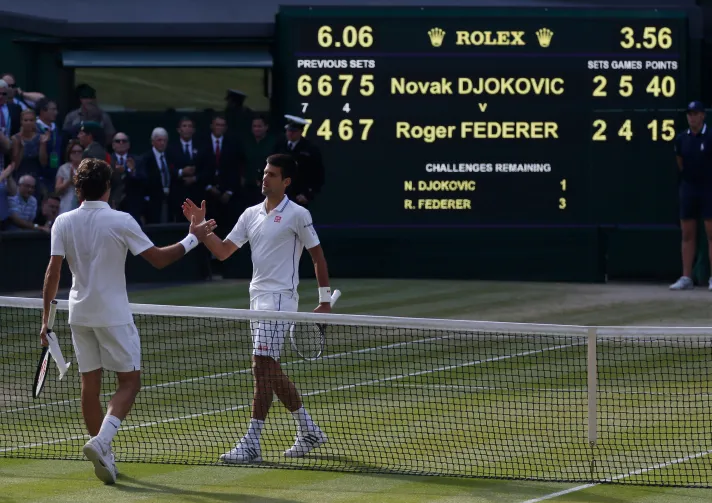
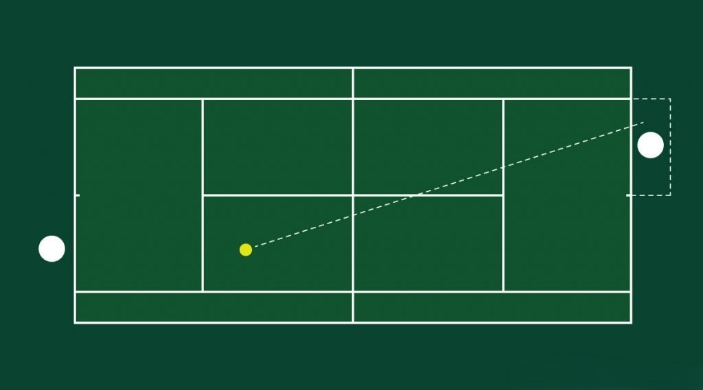
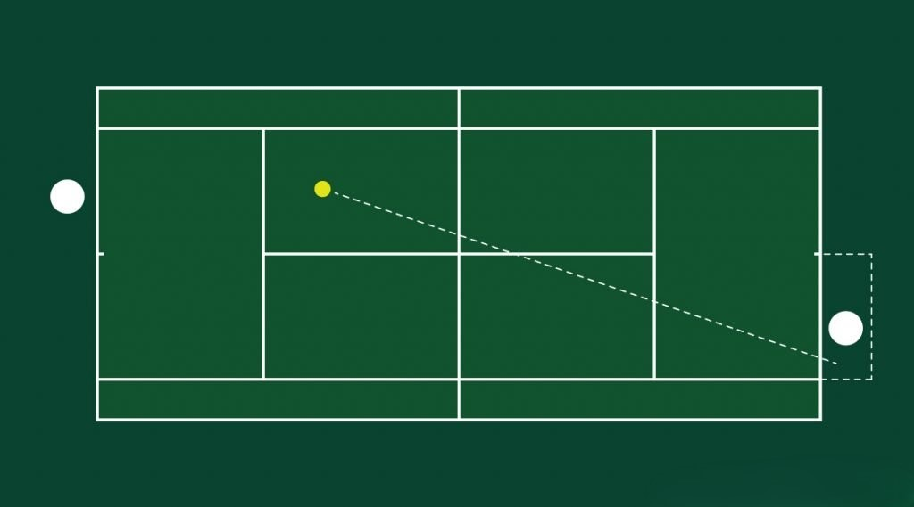
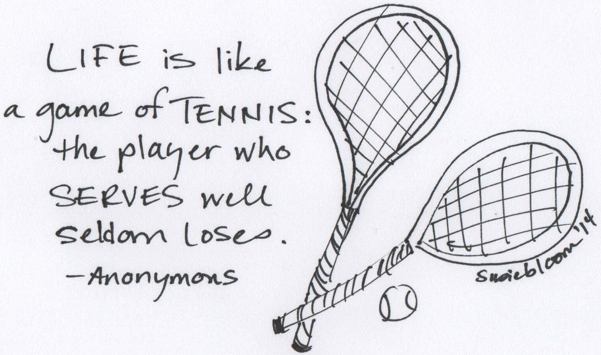
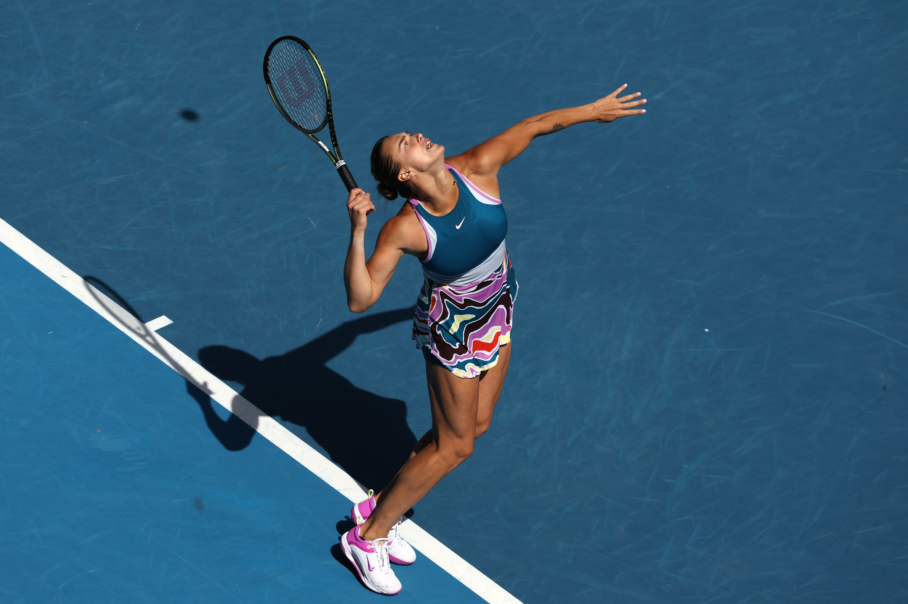
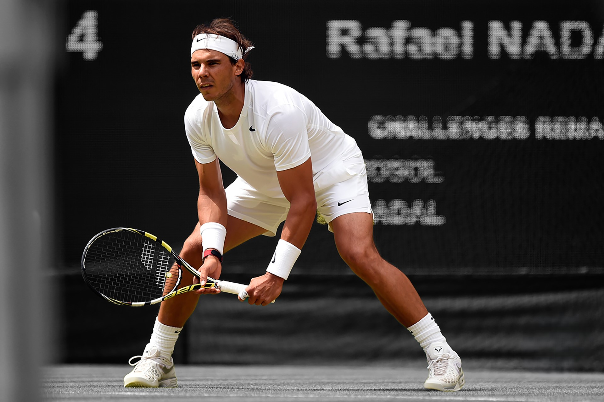
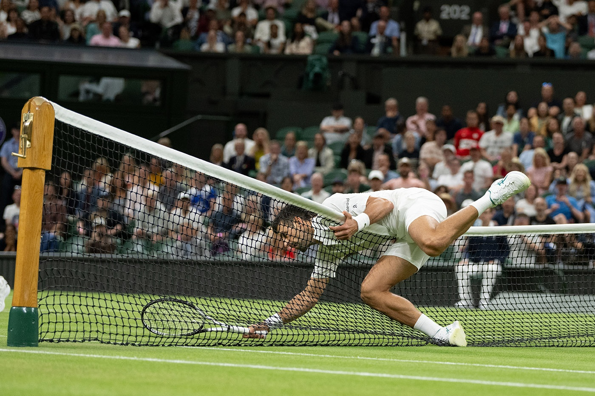
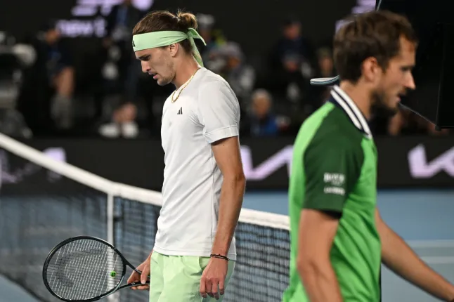
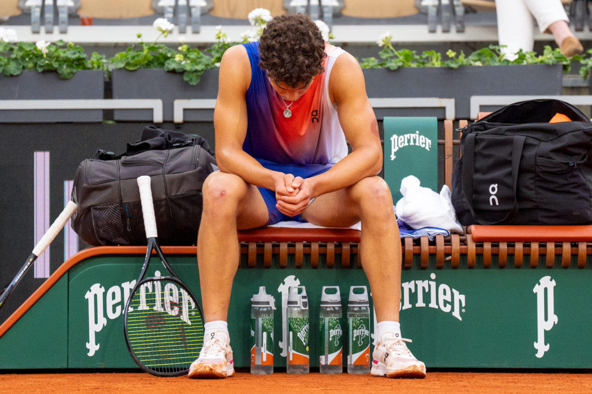

Tennis Court
A standard tennis court is a rectangle measuring 23.77 meters in length
and 8.23 meters in width for singles matches (one-on-one).
For doubles matches (two-on-two), the width of the court is 10.97 meters.
The height of the net at the center of the court must always be
91.4 cm, with a maximum allowable deviation of 1.5 mm.
A tennis court consists of the baseline, sidelines, service lines,
corridors, and the 10-centimeter center mark.

Court Layout
The baseline and sidelines define the boundaries of the court
for singles matches. Anything beyond these lines is out.
The baseline and corridors define the boundaries of the court
for doubles matches. Anything beyond these lines is out.
The service lines are the same for both singles and doubles
and form two service boxes (“deuce court” and “advantage court”).
The 10-centimeter center mark divides the baseline into two equal parts
and runs parallel to the sidelines.
Scoring System
A tennis match consists of sets, sets consist of games,
and games consist of points. The scoring system is as follows:
- The first point won — 15:0.
- The second point won — 30:0.
- The third point won — 40:0.
- The fourth point won — game.
If both players have won three points each, the score becomes “deuce.”
From this point, a player must win two consecutive points to win the game.
The first point provides an “advantage,” and the second secures the game.
If a player gains an advantage but then loses the next point, the score
returns to “deuce,” and the fight for the game continues.
Winning a Set
To win a set, a player must win six games before their opponent.
However, if the score in the set reaches 5:5, two additional games are played.
If one player wins these two games consecutively, the set is won 7:5.
If the score becomes 6:6, a tiebreak is played.
Tiebreak
During a tiebreak, points are counted as 0, 1, 2, and so on.
The first player to score 7 points wins the set, provided there is a margin
of 2 points over the opponent (e.g., 7:5). If necessary, the tiebreak
continues until this margin is achieved (e.g., 11:9).
At Grand Slam tournaments, in the deciding set at 6:6, a “championship
tiebreak” is played, which is similar to a regular tiebreak but extends
to 10 points.
Match Formats
A tennis match can be played in a three-set format (winning two sets is
required to win the match) or a five-set format (winning three sets is
required to win the match). The five-set format is now used exclusively
in men’s tennis and only at Grand Slam tournaments. In all other
tournaments, both women and men compete in the three-set format.

Now that we know what a tennis court looks like, the purpose of each
line on it, and how the scoring in a match works, let's discuss the
rules that are learned directly during the course of a match.
Serving Rules
Each game begins with a serve to the first service box, known as the
“deuce court.”
It is called the “deuce court” because, at deuce,
the serve is always made to this box.
The serve to the deuce court is made from the right side of the baseline
diagonally into the first service box.

The second point in each game begins with a serve to the second service box, known
as the “advantage court.” It is called the “advantage court” because, when
a player has the advantage, the serve is always made to this box.
The serve to the advantage court is made from the left side of the baseline
diagonally into the second service box.

Serves must alternate between service boxes:
first to the deuce court, then to the advantage court, and so on.
Tiebreak Serving
In a tiebreak, the server initially serves one point to the deuce court,
then the serve switches to the opponent, who serves first to the advantage
court, then to the deuce court. This alternation continues until the tiebreak ends.

Server and Receiver Positions
The server must stand with both feet behind the baseline and either
to the right or left of the center mark, depending on the service box.
The server must toss the ball in any direction and strike it with the
racket before it touches the ground. The serve is considered complete
when the racket either hits or misses the ball. A player who tosses
the ball up but then decides not to hit it is allowed to catch the
ball with their hand or racket or let it bounce, this is not considered a fault.

The server always has two attempts to successfully serve the ball,
known as the first serve and the second serve. If the first serve is a fault,
the server must serve again without delay from the same side of the court
where the fault occurred. If both serve attempts fail, the server loses
the point, which is called a double fault.
If, during the first or second serve, the ball touches the net and lands
outside the service box, the serve is considered a fault. However,
if the ball touches the net and lands inside the service box, the serve is
replayed. Additionally, if the server steps over the baseline before hitting
the ball during the first or second serve, it is also considered a fault.
The receiver can position themselves anywhere on the court during the serve.
The serve must be returned after the ball bounces. If the receiver returns
the serve without letting the ball bounce, it is considered a fault, and
they lose the point.

After each completed game, the receiver becomes the server, and the server
becomes the receiver. If the receiver has a chance to win the opponent's
serve in the next rally, this situation is called a breakpoint.
Faults During Rally
- Hitting the ball out of bounds.
- Hitting the ball into the net.
- Touching the net with the racket or any part of the body.

Winning Plays During Rally
- A service winner or ace (when the opponent cannot touch the ball on the serve).
- A return winner (when the opponent cannot touch the ball after the return of serve).
- A winner (when the opponent cannot touch the ball after a regular stroke).
- A double bounce on the opponent’s side after your stroke.
- During rallies, players cannot strike the ball on the opponent’s side of the court.
However, they may follow through with their racket across the net after
striking the ball from their side.
- If the ball hits the net and lands on the opponent’s side during
a rally, the play continues.
- If the ball touches a line, it is considered in play, regardless of whether
it hits the line from the inside or outside.

Changing Sides and Transitions
Players must change sides at the end of the first, third,
and every subsequent odd-numbered game of each set.
Players also change sides at the end of each set, unless
the total number of games in that set is odd. In that case,
players change sides at the end of the first game of the next set.

During a tiebreak, players change sides after every six points.
Transitions after the first games of a set and during a tiebreak
occur without rest. Transitions after the third and subsequent
odd-numbered games include a 90-second rest period. The break between
sets lasts 120 seconds.
